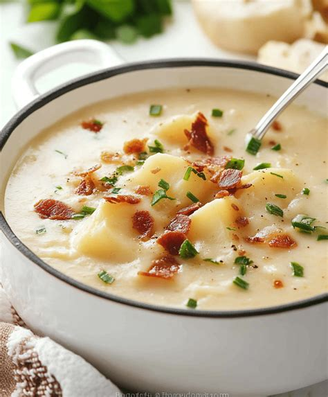

Loaded Baked Potato Soup
Home

Description
This fully-loaded baked potato soup recipe yields the thickest and most delicious potato soup ever. I created this soup after having a similar soup at a restaurant. It's incredible comfort food made with ease! It's a very simple recipe to adjust to your taste. My family always asks for this soup in the winter. Garnish with chives, bacon crumbles, and Cheddar cheese.
Ingredients
- 6 strips bacon
- 5 Yukon Gold potatoes, cut into eighths
- ½ cup butter
- 1 small sweet onion, diced
- 2 cloves garlic, minced
- 3 tablespoons all-purpose flour
- 1 teaspoon salt
- 1 teaspoon ground black pepper
- 3 (15 ounce) cans chicken broth
- 1 pint half-and-half
- 2 cups shredded Cheddar cheese, divided
- 1 (8 ounce) container sour cream
- 1 teaspoon dried parsley